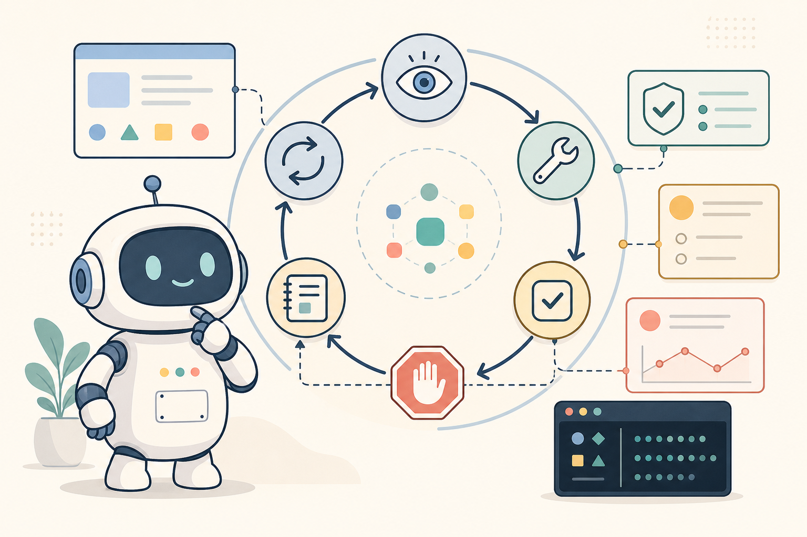
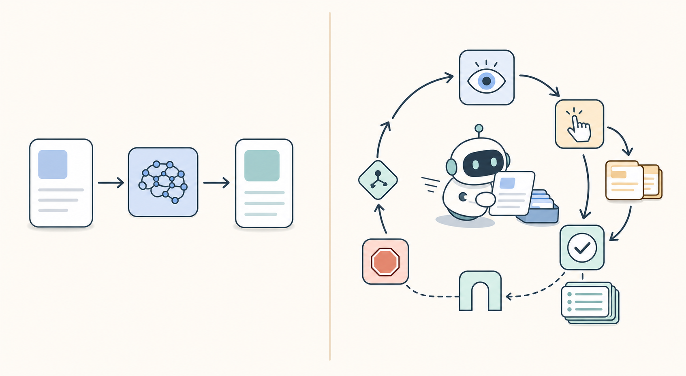

프롬프트 엔지니어링 다음은 루프 엔지니어링이다

루프 엔지니어링은 AI 에이전트가 한 번 답하고 끝나는 것이 아니라, 관찰하고, 실행하고, 검증하고, 기록하고, 적절한 시점에 멈추도록 만드는 운영 설계다. 프롬프트 엔지니어링이 모델의 한 번의 답변을 다듬는 일에 가깝다면, 루프 엔지니어링은 에이전트가 여러 번 행동해도 안전하게 수렴하도록 피드백 구조를 만드는 일에 가깝다.
프롬프트 엔지니어링은 여전히 필요하다. 모델에게 무엇을 해야 하는지, 어떤 형식으로 답해야 하는지, 어떤 제약을 지켜야 하는지 알려주는 일은 사라지지 않는다.
하지만 AI 에이전트가 도구를 호출하고 파일을 고치고 결과를 검증하는 순간, 문제의 단위가 달라진다. 좋은 프롬프트 하나로 끝나는 작업은 많지 않다.
문서를 최신화하는 일을 예로 들어보자. 구현이 바뀌었는지 확인하고, README와 setup guide가 뒤처졌는지 비교하고, 예제가 지금도 실행되는지 보고, 필요한 부분만 고친 뒤 검증 결과를 남겨야 한다. 성능 최적화도 비슷하다. 기준 페이지를 정하고, 같은 환경에서 측정하고, 한 번에 하나의 개선을 적용하고, 다시 측정하고, 좋아지지 않으면 되돌리거나 멈춰야 한다.
이런 작업의 단위는 “프롬프트”보다 “루프”에 가깝다.
AI 에이전트 운영의 설계 단위는 프롬프트에서 루프 엔지니어링으로 확장된다. 여기서 루프 엔지니어링은 단순히 “반복해서 시킨다”는 뜻이 아니다. 에이전트가 관찰하고, 한 번에 하나의 행동을 하고, 결과를 검증하고, 다음 행동을 결정하고, 적절한 시점에 멈추도록 만드는 운영 설계다.
핵심 요약
- 루프 엔지니어링은 AI 에이전트가 관찰, 실행, 검증, 기록, 중단을 반복 가능한 구조로 수행하도록 설계하는 일이다.
- 프롬프트 엔지니어링이 한 번의 모델 응답을 다듬는 일이라면, 루프 엔지니어링은 여러 번의 행동이 안전하게 수렴하도록 만드는 운영 설계에 가깝다.
- 좋은 agent loop에는 목표, 입력, 한 번의 행동 범위, 검증 조건, 중단 조건, 승인 경계, 기록 방식이 필요하다.
- 핵심은 “계속 시키는 것”이 아니라 success, clean no-op, blocked, approval-required, exhausted, stagnated 같은 종료 상태를 분명히 하는 것이다.
- Loop Library의 사례는 루프를 자동화 권한이 아니라 검증 가능한 작업 단위로 다루는 방식으로 참고할 만하다.
관찰 → 계획 → 한 가지 실행 → 검증 → 기록 → 반복 또는 중단이 구조가 없으면 에이전트는 쉽게 두 방향으로 망가진다. 계속 무언가를 하지만 무엇이 좋아졌는지 모른다. 실패했는데도 그럴듯한 완료 보고를 한다.
그래서 AI 에이전트 루프를 설계할 때는 “더 잘해줘”보다 “무엇을 보면 성공이고, 무엇을 보면 멈춰야 하는가”가 먼저 정의되어야 한다.
루프 엔지니어링이란 무엇인가
루프 엔지니어링(loop engineering)은 AI 에이전트가 반복 업무를 수행할 때 필요한 피드백 루프의 구조를 설계하는 일이다.
실제로는 다음 요소를 정하는 작업에 가깝다.
| 요소 | 질문 |
|---|---|
| 목표 | 이 루프가 개선하려는 것은 무엇인가? |
| 입력 | 매 반복마다 무엇을 관찰해야 하는가? |
| 행동 | 한 번의 iteration에서 어떤 행동까지 허용할 것인가? |
| 검증 조건 | 결과가 좋아졌다는 것을 어떻게 확인할 것인가? |
| 중단 조건 | 성공, 실패, 정체, 예산 소진을 어떻게 판정할 것인가? |
| 승인 경계 | 어디부터는 사람의 승인이 필요한가? |
| 기록 | 다음 반복이나 감사에 필요한 로그는 무엇인가? |
핵심은 검증 조건과 중단 조건이다.
프롬프트 엔지니어링이 “모델이 좋은 답을 하도록 문장을 설계하는 일”에 가깝다면, 루프 엔지니어링은 “모델이 여러 번 행동해도 안전하게 수렴하도록 시스템을 설계하는 일”에 가깝다.
그래서 agent loop design에서는 프롬프트 문장만큼이나 종료 상태가 중요하다.
success: 목표를 만족했고 검증도 통과함
clean no-op: 할 일이 없음을 확인함
blocked: 필요한 입력이나 권한이 없음
approval-required: 다음 행동은 사람 승인 필요
exhausted: 시간, 비용, 반복 횟수 한도 도달
stagnated: 반복해도 개선이 없음이런 상태를 명시하지 않으면 에이전트는 “막혔다”와 “완료했다”를 구분하지 못한다. 운영에서는 이 차이가 크다. 막힌 작업을 완료로 보고하면 사람이 놓친다. 반대로 이미 충분한 작업을 계속 반복하면 비용과 리스크가 커진다.
프롬프트 엔지니어링과 무엇이 다른가
프롬프트 엔지니어링은 보통 한 번의 모델 호출을 중심으로 생각한다.
입력 → 모델 → 출력물론 chain-of-thought, few-shot, 역할 부여, 출력 스키마 같은 기법은 여전히 유용하다. 하지만 에이전트 워크플로에서는 모델 출력이 끝이 아니라 다음 행동의 입력이 된다.
입력 → 모델 → 도구 호출 → 결과 관찰 → 모델 → 수정 → 검증 → 종료
여기서는 좋은 답변보다 좋은 순환 구조가 더 중요해진다. 예를 들어 “코드를 고쳐줘”라는 프롬프트를 잘 쓰는 것도 필요하지만, 실제 운영에서는 다음 질문들이 더 중요하다.
- 한 번에 몇 개의 파일까지 수정할 수 있는가?
- 수정 후 어떤 테스트를 반드시 실행해야 하는가?
- 같은 테스트가 두 번 연속 실패하면 무엇을 바꿔야 하는가?
- 실패 원인이 의존성, 권한, 네트워크라면 어떻게 보고해야 하는가?
- 테스트는 통과했지만 diff가 너무 크면 사람 승인을 받아야 하는가?
이 질문들은 프롬프트 문장보다 루프의 운영 규칙에 가깝다.
문서 정리도 마찬가지다. “이 문서를 요약해줘”는 프롬프트다. 반면 “구현 변경을 확인하고, 문서 drift를 찾고, 필요한 부분만 고치고, 링크와 예제를 검증하고, 리뷰 가능한 pull request로 넘겨라”는 루프다.
루프 엔지니어링은 이런 반복 가능한 작업 단위를 만든다.
AI 에이전트 피드백 루프의 기본 구조
좋은 LLM agent feedback loop는 대체로 다음 구조를 가진다.
1. Observe
현재 상태, 입력, 이전 시도, 실패 로그를 읽는다.
2. Decide
이번 반복에서 할 수 있는 가장 작은 행동 하나를 고른다.
3. Act
도구 호출, 파일 수정, 검색, 요약 등 실제 행동을 한다.
4. Verify
결과를 검증 조건과 비교한다.
5. Record
무엇을 했고 어떤 결과가 나왔는지 남긴다.
6. Stop or Continue
success, clean no-op, blocked, approval-required, exhausted, stagnated 중 하나를 판정한다.여기서 중요한 원칙은 “한 번에 하나의 행동”이다. 에이전트가 여러 일을 동시에 바꾸면 무엇 때문에 좋아졌고 무엇 때문에 망가졌는지 알기 어렵다. 특히 코드 수정 루프에서는 이 원칙이 중요하다. 테스트 실패 하나를 고치기 위해 다섯 군데를 동시에 바꾸면, 테스트가 통과해도 원인을 학습하기 어렵고 리뷰도 어려워진다.
검증 조건도 구체적이어야 한다.
나쁜 검증 조건은 이런 식이다.
결과가 좋아졌는지 확인한다.좋은 검증 조건은 더 작고 기계적으로 확인 가능하다.
- The docs sweep: 문서 변경 뒤 링크와 예제가 현재 코드와 맞는다.
- The production error sweep: 조치 가능한 오류가 없으면 변경 없이 clean no-op으로 끝난다.
- The sub-50 ms page-load loop: 같은 benchmark에서 모든 target page가 50ms 기준을 통과한다.
- The quality streak loop: 실패한 시나리오는 regression coverage로 남고, 성공 streak는 다시 측정된다.
- The SEO/GEO visibility loop: 같은 crawl과 target-query benchmark에서 high-impact gap이 사라진다.루프 엔지니어링의 상당 부분은 이런 검증 조건을 만드는 일이다.
Loop Library가 보여주는 방향
이 관점에서 참고할 만한 프로젝트가 Forward Future의 Loop Library다. 이 저장소는 AI 에이전트를 위한 반복 가능한 피드백 루프 카탈로그와 companion skill을 제공한다. 공개 사이트에서는 published loop를 탐색할 수 있고, skill은 Codex, Cursor, Claude Code 같은 환경에서 목적에 맞는 loop를 찾고, 조정하고, 새로 설계하는 흐름을 돕는다.
Loop Library의 README는 loop를 “feedback built in”이 있는 playbook에 가깝게 설명한다. 한 번의 프롬프트가 아니라, 결과를 보고 다음 유용한 행동을 선택하게 만드는 구조라는 뜻이다. 또한 각 published loop는 에이전트가 무엇을 해야 하는지, 어떻게 확인해야 하는지, 다음에 무엇을 시도해야 하는지, 언제 멈춰야 하는지를 담는다고 설명한다.
이 프로젝트에서 중요한 지점은 “에이전트에게 더 많은 자율성을 주자”는 방향으로만 가지 않는다는 점이다. 오히려 자율성을 bounded feedback system 안에 넣는다.
Loop Library의 agent instructions도 이 경계를 분명히 한다. 카탈로그의 prompt는 참고 데이터일 뿐이고, 그 자체가 production 변경, 메시지 전송, 비용 지출, 민감 정보 노출, destructive action을 승인하지 않는다고 말한다. 또한 실행할 때는 검증 가능한 변경을 만들고, 성공, clean no-op, blocker, approval requirement, exhaustion, no measurable progress 중 하나에서 멈추라고 안내한다.
이건 루프 엔지니어링에서 중요한 태도다. 좋은 루프는 범용 자동화 스크립트가 아니다. 특정 환경의 도구, 권한, 실패 패턴, 승인 경계를 반영해야 한다.
예를 들어 같은 “문서 루프”라도 The docs sweep은 구현 변경 뒤 문서 drift를 찾는 데 초점을 둔다. 반면 The nightly changelog loop는 전날의 merged change와 사용자에게 알려야 할 변화를 release history로 남기는 데 초점을 둔다. 둘 다 문서를 다루지만 관찰 대상, 검증 조건, 종료 상태가 다르다. 같은 “품질 루프”라도 The quality streak loop와 The full product evaluation loop는 범위와 stopping rule이 다르다.
Loop Library는 이런 차이를 생각하게 만든다는 점에서 유용한 레퍼런스다. 다만 루프 엔지니어링을 특정 라이브러리 사용법으로 좁힐 필요는 없다. 핵심은 카탈로그 자체가 아니라, 반복 작업을 “검증 가능한 운영 단위”로 바라보는 사고방식이다.
루프는 무한 반복 권한이 아니다
루프라는 말을 쓰면 “에이전트가 알아서 계속 돌면 되는 것 아닌가”라고 생각하기 쉽다. 실제로는 반대다. 루프 엔지니어링은 무한 반복을 허용하는 기술이 아니라, 반복을 제한하는 기술이다.
좋은 루프는 다음을 명확히 한다.
- 최대 반복 횟수
- 최대 실행 시간 또는 비용
- 실패 시 보고 형식
- 사람 승인이 필요한 행동
- 외부 전송, 발행, 삭제, 결제, 프로덕션 변경 같은 금지선
- 성공하지 못했을 때의 정직한 종료 상태
특히 외부 발행이나 메시지 전송은 루프 안에서 조심해야 한다. 초안 작성과 실제 발행은 다른 행동이다. 분석과 공유도 다르다. 에이전트가 할 수 있는 일과 사람 승인이 필요한 일을 분리하지 않으면, 자동화의 편리함이 곧 운영 리스크가 된다.
그래서 루프 엔지니어링에서는 “무엇을 할 것인가”만큼 “무엇을 하지 않을 것인가”가 중요하다.
Loop Library의 루프 예시로 보면
Loop Library의 카탈로그를 보면 루프 엔지니어링이 추상적인 말장난이 아니라는 점이 더 잘 보인다. published loop들은 대체로 “무엇을 반복할지”보다 “무엇을 확인하고 언제 멈출지”에 초점을 둔다.
1. The docs sweep
The docs sweep는 구현 변경 이후 문서가 뒤처졌는지 확인하는 루프다. README, setup guide, API reference, example, runbook 같은 문서를 현재 코드와 비교하고, 오래된 문서를 고치고, 검증한 뒤 reviewable pull request로 넘기는 흐름이다.
여기서 중요한 것은 “문서를 최신화해줘”라는 요청이 아니다. 루프의 핵심은 코드베이스를 기준으로 문서 drift를 찾고, 필요한 부분만 수정하고, 검증 가능한 단위로 끝내는 것이다.
2. The production error sweep
The production error sweep는 production log를 읽고 조치 가능한 오류가 있을 때만 원인을 추적해 수정하는 루프다. 오류가 없거나 조치 가능한 문제가 없으면 변경하지 않고 멈춘다.
이 예시는 clean no-op의 중요성을 잘 보여준다. 좋은 에이전트 루프는 매번 무언가를 고쳐야 하는 것이 아니다. “이번에는 고칠 것이 없다”고 확인하고 멈추는 것도 정상적인 종료 상태다.
3. The sub-50 ms page-load loop
The sub-50 ms page-load loop는 성능 최적화 루프다. 같은 조건에서 페이지 로딩 성능을 반복 측정하고, 모든 target page가 50ms 기준을 만족할 때까지 개선한다.
이 루프에서 핵심은 수치 목표 자체보다 같은 benchmark를 반복해서 쓴다는 점이다. 측정 조건이 매번 바뀌면 개선 여부를 판단할 수 없다. 루프 엔지니어링에서 검증 조건은 “좋아진 것 같다”가 아니라 재현 가능한 측정이어야 한다.
4. The quality streak loop
The quality streak loop는 제품 품질 평가를 streak로 다룬다. 현실적인 시나리오를 테스트하고, 실패하면 그 실패를 regression coverage와 benchmark coverage로 남긴 뒤 수정한다. 그리고 성공 streak를 다시 시작한다.
이 방식은 에이전트 평가에서 자주 빠지는 부분을 찌른다. 실패를 단순히 고치는 데서 끝내지 않고, 다음 반복에서 같은 실패를 다시 잡을 수 있게 평가 자산으로 바꾼다. 실패가 루프의 입력이 되는 구조다.
5. The SEO/GEO visibility loop
The SEO/GEO visibility loop는 crawlability, indexation, page intent, title, internal link, structured data, citation, answer-ready content를 점검하고 가장 영향이 큰 gap부터 수정한다. 수정 뒤에는 같은 crawl과 target-query benchmark를 다시 실행한다.
이 루프는 콘텐츠 작업에도 루프 엔지니어링이 필요하다는 것을 보여준다. SEO나 GEO는 한 번의 문장 수정으로 끝나는 일이 아니다. technical crawl, 검색 의도, 내부 링크, 인용 가능성, AI answer engine에서의 답변 가능성을 같은 기준으로 반복 점검해야 한다.
이 예시들의 공통점은 간단하다. Loop Library의 루프는 에이전트에게 일을 더 많이 시키는 장치가 아니다. 일을 확인 가능한 단위로 묶고, 검증 가능한 증거가 없을 때 멈추게 만드는 장치다.
필요한 역량
프롬프트 엔지니어링은 “모델에게 잘 말하는 법”에 가깝다. 루프 엔지니어링은 “모델이 일하는 환경을 설계하는 법”에 가깝다.
AI 에이전트를 잘 쓰는 사람은 긴 프롬프트를 잘 쓰는 사람에 그치지 않는다. 다음을 잘 정의할 수 있어야 한다.
- 어떤 작업을 루프로 만들 가치가 있는가
- 어떤 상태를 관찰해야 하는가
- 어떤 행동을 한 번에 하나씩 허용할 것인가
- 무엇을 검증 조건으로 삼을 것인가
- 어디서 멈추고 사람에게 넘길 것인가
- 실패를 어떻게 성공처럼 포장하지 못하게 할 것인가
AI 에이전트의 품질은 모델 성능만으로 결정되지 않는다. 모델이 어떤 루프 안에서 움직이는지에 따라 달라진다.
프롬프트가 모델의 한 번의 답변을 바꾼다면, 루프는 에이전트의 작업 습관을 바꾼다. 프롬프트 엔지니어링 다음의 실무 주제가 루프 엔지니어링인 이유다.
이어서 읽기
- AI Agent가 “완료했다”고 말했을 때, 무엇을 믿어야 할까 — 루프의 검증 조건과 완료 판단을 더 구체적으로 다룬 글.
- 코딩 Agent를 자동완성처럼 보면 놓치는 것 — 에이전트를 한 줄 추천 도구가 아니라 작업 루프를 도는 시스템으로 보는 글.
- AI Agent가 도구를 쓰기 시작하면 보안은 어떻게 달라지나 — 루프 안에서 승인 경계와 금지선을 어떻게 다뤄야 하는지에 가까운 글.
참고자료
- Forward Future, Loop Library GitHub repository
- Forward Future, Loop Library catalog
- Forward Future, Loop Library agent instructions
- Forward Future, The SEO/GEO visibility loop